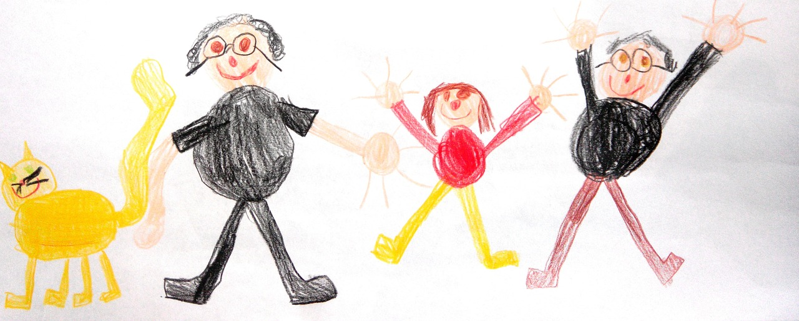

{% assign posts_count = (paginator.posts | size) %}

<div class="home">
    

    <h1>Welcome to SAFE</h1>

    <p>

Systemic Autism-related Family Enabling (SAFE) is a support toolkit for families of children with autism. SAFE was developed in collaboration with families by Professor Rudi Dallos at Plymouth University, UK.
</p>
<p>

SAFE will now be evaluated in a series of clinical trials lead by the University of Plymouth. More details to follow soon.
    </p>


  {% if posts_count > 0 %}
    <div class="posts">
      {% for post in paginator.posts %}
        <div class="post py3">
          <p class="post-meta">{{ post.date | date: site.date_format }}</p>
          <a href="{{ post.url | prepend: site.baseurl }}" class="post-link"><h3 class="h1 post-title">{{ post.title }}</h3></a>
          <p class="post-summary">
            {% if post.summary %}
              {{ post.summary }}
            {% else %}
              {{ post.excerpt }}
            {% endif %}
          </p>
        </div>
      {% endfor %}
    </div>

    {% include pagination.html %}
  {% else %}
    <h1 class='center'>{{ site.text.index.coming_soon }}</h3>
  {% endif %}
</div>
